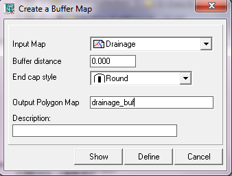

This function allows you to create a set of one or more buffers around point, line or polygon features
Dialog box options:
| Dialog box |  |
|
Input polygon map: |
Select an input feature map. Open the list box and select the desired input map, or drag a feature map directly from the Catalog into this box. No special input map requirements. |
|
Buffer distance: |
The distance of the boundary of the output polygon(s) to the boundary of the input feature(s). This number must be positive for all non-polygon features. For Polygons the number maybe negative or positive. Positive number expands the polygon. Negative distance shrinks the polygon |
|
End Cap style: |
The style of the ending of the lines that where buffered. Options are 'Round', 'Square' or 'Butt' Square creates a rectangular ending at the buffer distance of the end of the line. Butt cuts it directly at the end of the line and Round creates a rounded ending at the buffer distance of the end of the line |
|
Output point map: |
Type a name for the output point map that will contain the polygon label points. |
|
Description: |
Optionally, type a description for the output map. The description will appear in the status bar of the Main window when moving the mouse pointer over the map in a Catalog, and in the title bar of a map window when the output map is displayed. If no description is supplied, the output map will use its own definition as description. |
When you click the Show button, the dependent output map will be defined, calculated and shown. When you click the Define button, the dependent output map will only be defined; if necessary, the map will be calculated later, for instance when the map is opened to be displayed.
See also: